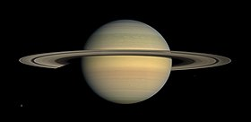

Saturno es el sexto planeta del sistema solar, el segundo en tamaño y masa después de Júpiter y el único con un sistema de anillos visible desde nuestro planeta. Su nombre proviene del dios romano Saturno. Forma parte de los denominados planetas exteriores o gaseosos. El aspecto más característico de Saturno son sus brillantes anillos. Antes de la invención del telescopio, Saturno era el más lejano de los planetas conocidos y, a simple vista, no parecía luminoso ni interesante. El primero en observar los anillos fue Galileo en 1610,1 pero la baja inclinación de los anillos y la baja resolución de su telescopio le hicieron pensar en un principio que se trataba de grandes lunas. Christiaan Huygens, con mejores medios de observación, pudo en 1659 observar con claridad los anillos. James Clerk Maxwell, en 1859, demostró matemáticamente que los anillos no podían ser un único objeto sólido sino que debían ser la agrupación de millones de partículas de menor tamaño. Las partículas que componen los anillos de Saturno giran a una velocidad de 48 000 km/h, 15 veces más rápido que una bala.
Debido a su posición orbital más lejana que Júpiter, los antiguos romanos le otorgaron el nombre del padre de Júpiter al planeta Saturno. En la mitología romana, Saturno era el equivalente del antiguo titán griego Crono, hijo de Urano y Gea, que gobernaba el mundo de los dioses y los hombres devorando a sus hijos en cuanto nacían para que no lo destronaran. Zeus, uno de ellos, consiguió esquivar este destino y finalmente derrocó a su padre para convertirse en el dios supremo.
